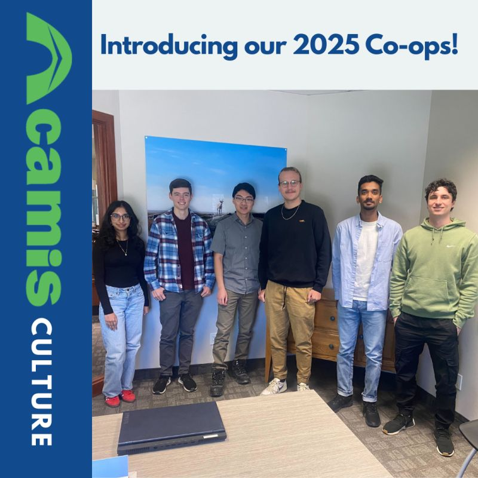

Introduction
For my fourth co-op work term, I had the opportunity to join Camis, where I contributed to both their customer facing website and their field application. It was an incredible experience and I got great support from my wonderful teammates who were extremely helpful were the reason I could get up to speed so quickly.
Information About The Employer
Camis Inc. is the leading provider of reservation and facilities management solutions for government-operated parks and campgrounds across Canada and the United States. Through their well designed software package Camis helps parks efficiently manage high volumes of traffic while improving the customer experience and satisfaction at the parks.
Learning Goals
1) Learn more about databases
Throughout the term, I placed a strong focus on understanding how our system interacts with the database. I spent time analyzing how past features were implemented and how their data was structured in the tables. This gave me a solid foundation and when I began taking database work gave me much more confidence going into it. In the end I feel that I successfully achieved this goal and was able demonstrate this understanding with my ability to write queries to retrieve information on the request of customers as write stored procedures and design tables for new features that we implemented.
2) Learn more about C# and Async development
During my term most of the tickets I worked on required working with C# and due to our projects async heavy design I was able to quickly improve on this goal. This frequent hands on experience really helped me to fully understand what async development is and why we use it in our projects. This not only helped for designing and planning for new features, but also while working on development stories. Additionally, I was able to begin working with C# specific features like Records and the LINQs which helped me navigate and understand our codebase.
3) Learn more about software design patterns
My goal was to deepen my understanding of software design patterns and how they are applied to real projects. To achieve this goal I sat in during design meetings and really tried to understand why all the decisions were made. Overtime I began to get more comfortable in these meetings and even began to add meaningful contributions to the discussions. By the end of the term I feel as if I have a lot stronger understanding of the design phase in a software products lifecycle and feel that I did succeed in my goal.
My Role At The Company
- Developed and maintained payment related features using C#, contributing to the reservation and sale systems
- Investigated & fixed customer facing production issues
- Contributed to the development of the customer facing web application that allows for booking and sales to be made by all customers
- Written many queries to retrieve information regarding transactions made on our systems
Conclusion
As the first 4-months of my co-op term at Camis comes to an end, I'm extremely happy with my experience so far. Going into this co-op term and joining the payment team, I expected to build on the knowledge I gained during my first co-op at NCR, but the amount of knowledge I've gained so far in both software development and the payment domain has gone far beyond what I expected. I'm extremely thankful to my team for the 4 months that have past and am extremely excited to continue improving as a developer working alongside my team.
List of Technologies Used
Improved Technologies
- SQL
- Typescript
- Docker
- Powershell Scripting
New Technologies
- C#
- Angular